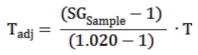
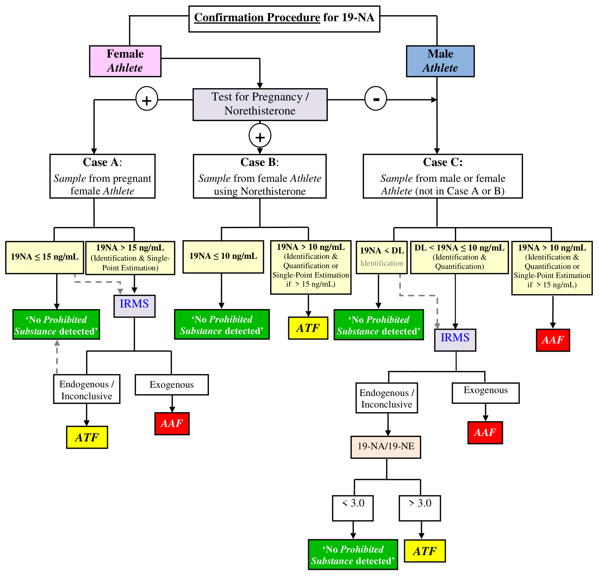

Technical Documents · TD2016NA
Edition v1.0, 2016 (version 1.0) · effective 1 September 2016 · superseded
Retrieved on 25 November 2026 from https://www.wada-ama.org/sites/default/files/resources/files/td2016na_eng.pdf
Editions: v1.1, 2027 (current) · v2.0, 2021 · v1.0, 2021 · v1.0, 2019 · v1.0, 2017 · v1.0, 2016 · v1.0, 2015 · v1.0, 2014 · v1.0, 2012 · v1.0, 2010 · v1.0, 2010 · v1.0, 2004
p. 1
HARMONIZATION OF ANALYSIS AND REPORTING OF 19-NORSTEROIDS RELATED TO NANDROLONE
1.0 Introduction
This document has been established to harmonize the Confirmation Procedure for the analysis and reporting of findings for 19-norsteroids related to nandrolone by Laboratories.
The detection of the Use of nandrolone (19-nortestosterone) and other 19-norsteroids (e.g. 19-norandrostenedione, 19-norandrostenediol) is based primarily upon the identification of the main urinary Metabolite, 19-norandrosterone (19-NA) at a concentration (derived from hydrolysis with β-glucuronidase from E. coli) greater than the Decision Limit (DL), as documented in the Technical Document on Decision Limits for the Confirmatory Quantification of Threshold Substances (TDDL) [1]. More than one Metabolite of administered norsteroids may be detected in urine Samples and reported [e.g. 19-noretiocholanolone (19-NE)]; however, the identification and quantification of 19-NA, including the demonstration, when required, that the 19-NA does not come from endogenous origin, is sufficient to report an Adverse Analytical Finding (AAF).
Under specific circumstances, as described below, additional Analytical Testing and reporting may be required.
2.0 Confirmation Procedure
2.1 Identification and Quantification
In addition to meeting the identification criteria described in the IDCR Technical Document [2], the Laboratory shall demonstrate that the concentration of 19-NA is above the DL as set out in the TDDL [1] and/or that the 19-NA detected is not of endogenous origin (e.g. through GC/C/IRMS analysis).
The Confirmation Procedure to determine the concentration of 19-NA in the Sample shall include the following characteristics:
- A deuterated internal standard (e.g. 19-NA-d₄-glucuronide);
- If the 19-NA concentration in the Sample was estimated at or below 15 ng/mL during the Initial Testing Procedure: a calibration curve at an appropriate range bracketing the estimated concentration of the analyte in the Sample;
- If the 19-NA concentration in the Sample was estimated above 15 ng/mL during the Initial Testing Procedure: a single calibration point at 15 ng/mL;
p. 2
- The use of appropriate negative and positive quality control (QC) samples.
The GC/C/IRMS method shall include the following characteristics:
- Each analysis by GC/C/IRMS shall include:
- a negative QC urine: δ¹³C values of 19-NA and endogenous reference compound (ERC) in a normal endogenous range (i.e. greater than -27‰), with a difference in δ¹³C values (∆δ) between ERC and 19-NA lesser than 3‰; and
- a positive QC urine: δ¹³C value of ERC in a normal endogenous range (i.e. greater than -27‰), with a ∆δ between ERC and 19-NA greater than 3‰.
These controls shall be subjected to the same sample preparation procedure as the Sample Aliquot.
- The GC/C/IRMS analysis shall include the confirmation of the 19-NA peak identity¹ .
2.2 Additional Tests
2.2.1 Test for Norethisterone and Pregnancy
19-NA may be excreted in small concentrations as a minor Metabolite of norethisterone [3], a progestogen agent of permitted use present in some oral contraceptives, and during pregnancy. Therefore, when the measured concentration of 19-NA exceeds the DL in the urine Sample of a female Athlete, the Laboratory shall perform:
- an analysis for the use of norethisterone-based contraceptives (e.g. detection of tetrahydronorethisterone), and if negative
- an analysis for pregnancy [e.g. based on the measurement of urinary human Chorionic Gonadotrophin (hCG)].
¹For example, confirmation by GC/MS analysis performed under comparable chromatographic conditions. The purpose is to produce a chromatogram with similar peak profiles so that the spectra can be used to identify the peak(s) of interest. Minor differences in retention time between the two techniques are expected.
p. 3
2.2.2 Test for demethylation
In addition, but rarely, 19-NA may be produced in urine Samples, in small concentrations, by in-situ 19-demethylation of androsterone (A) [4]. The reaction being more efficient with the 5β-isomer (i.e. 19-NE), such Samples show a less than usual ratio of 19-NA to 19-NE (i.e. 19-NA/19-NE less than 3.0), which is also less than the ratio of their respective urinary precursors A/E (Androsterone/Etiocholanolone)² . This possible endogenous formation of 19-NA can be verified by GC/C/IRMS analysis [5, 6].
2.2.3 GC/C/IRMS tests
GC/C/IRMS analysis shall be performed in the following cases³ :
- Samples in which the 19-NA concentrations are measured between the DL and 10 ng/mL, except in cases of pregnancy or use of norethisterone;
- In cases of pregnancy, when the 19-NA concentration is measured greater than 15 ng/mL⁴ .
Furthermore, a Laboratory may perform GC/C/IRMS analysis on Samples containing 19-NA at concentrations below the DL, as stipulated in an existing agreement with the Testing Authority, or upon consultation with the Testing Authority, or if requested by the Testing Authority or WADA. In such cases, a positive GC/C/IRMS analysis showing the presence of 19-NA of exogenous origin is sufficient evidence to report an AAF.
Laboratories that do not have the analytical capacity to perform GC/C/IRMS analysis for 19-NA shall have Samples, for which GC/C/IRMS analysis is mandatory, transferred to and analyzed by another Laboratory that has such analytical capacity.
²In the absence of inhibitors of 5α-reductase (e.g. finasteride).
³To reject the hypothesis of endogenous 19-NA formation the following criteria, based on the application of GC/C/IRMS analysis, shall be met simultaneously:
i- The Δδ value between the endogenous reference compound (ERC) [e.g. A or Pregnanediol (PD)] and 19-NA, i.e. Δδ = δERC - δ19-NA , is greater than 3 ‰, and
ii- The standard combined uncertainty (uc) associated with the determination of δ¹³C values, as estimated by the Laboratory during the GC/C/IRMS method validation, is not greater than 1.0 ‰ (uc_Max).
⁴In cases of pregnancy, when the concentration of 19-NA measured in a urine Sample is between the DL and 15 ng/mL, the IRMS analysis may also be performed to ascertain the endogenous origin of 19-NA.
p. 4
Due to the occurrence of preparations of norsteroids with a carbon isotopic signature (¹³C/¹²C) close to that of endogenous human urinary steroids, the result of the GC-C-IRMS analysis of the produced 19-NA may not readily indicate its exogenous origin (e.g. δ19-NA = -24 ‰). Therefore, in Samples from non-pregnant females or males, when the concentration of 19-NA is greater than the DL and the result of the GC/C/IRMS analysis is negative (i.e. not consistent with an exogenous origin of 19-NA) or inconclusive, the Laboratory shall determine the 19-NA/19-NE ratio based on the relative signals from the GC/MS analysis. This ratio may serve as a possible indicator of the administration of 19-norsteroids [6].
2.3 "B" Sample Confirmation Procedure
- In all cases, when the AAF for the "A" Sample is based on the results of a GC/C/IRMS analysis, the "B" Sample Confirmation Procedure also requires the GC/C/IRMS analysis (and confirmation of the 19-NA peak identity but not its quantification);
- In all other cases, the "B" Sample Confirmation Procedure requires the identification and quantification of the 19-NA reported. However, when the concentration of 19-NA exceeds 15 ng/mL, comparison to a single standard at 15 ng/mL and confirmation of the 19-NA peak identity are sufficient.
3.0 Interpretation
3.1 Adjusted Threshold
Only in the case of urine Samples measured with a specific gravity (SG) greater than 1.020 (as determined by the Laboratory), an adjustment to the Threshold (T) shall be made to take into account the SG of the Sample using the following formula:

3.2 Decision Limit for 19-NA
The DL for 19-NA applicable to Samples with a SG of 1.020 or smaller is published in the TDDL [1]. In cases where the SG is greater than 1.020, the DL shall be determined for the individual 19-NA test result using the SG-adjusted T and the correspondingly adjusted guard band g (i.e. the uc_Max shall be applied to the SG-adjusted T) in accordance with the TDDL [1]. Consequently, the adjusted DL shall be included in the Laboratory Test Report.
p. 5
4.0 Reporting
The Laboratory shall report 19-NA detected in a Sample from a male or a female Athlete (see sections 3.1 and 3.2 above) as defined below:
A. Samples from pregnant female Athletes
No reference to the pregnancy status of an Athlete shall be reported in any case.
- Adverse Analytical Finding (AAF):
- Samples for which the GC/C/IRMS analysis (see section 2.2.3 and footnote 4 above) is consistent with the exogenous origin of 19-NA.
[The results of the 19-NA determination⁵ and the GC/C/IRMS analysis⁶ shall be included in the Test Report].
- Atypical Finding (ATF):
- Samples for which the 19-NA concentration is greater than 15 ng/mL and the mandatory GC/C/IRMS analysis (see section 2.2.3 above) is inconclusive or not consistent with an exogenous origin of 19-NA.
[The results of the 19-NA determination⁵ and the GC/C/IRMS analysis⁶ shall be included in the Test Report].
⁵Reported 19-NA concentrations shall be expressed as follows:
- When the 19-NA concentration is greater than 15 ng/mL, no quantification is required in the Confirmation Procedure. The application of a single calibration point at 15 ng/mL is sufficient to confirm the estimated 19-NA concentration. The result shall be expressed as ">15 ng/mL" without the need for reporting the estimated concentration.
- When the 19-NA concentration is determined to be between the DL and 15 ng/mL, quantification using a calibration curve is required in the Confirmation Procedure. The confirmed concentration shall be expressed as the mean of triplicate determinations. The reported mean concentration shall be rounded down to one decimal place (e.g. a result of 2.67 ng/mL shall be reported as "2.6 ng/mL").
In every case, in accordance with the TDDL [1], the Laboratory shall report the DL for 19-NA and the combined standard uncertainty (uc) estimated by the Laboratory at the Threshold limit.
Where the SG of the Sample is greater than 1.020, the value of the adjusted DL and the SG shall be included in the Laboratory Test Report e.g. "The concentration of 19-NA was found to be x.x ng/mL which is greater than the DL of y.y ng/mL which has been adjusted for the measured SG of 1.0zz".
⁶The Test Report for the GC/C/IRMS analysis shall include a comment indicating whether or not the GC/C/IRMS finding is consistent with an exogenous origin of 19-NA, the δ¹³C values for 19-NA and ERC as well as the associated uc, expressed in units.
p. 6
- "No Prohibited Substance or Method on the test menu was detected":
- No other Prohibited Substance or Prohibited Method has been confirmed in the Sample, and
- Samples for which the 19-NA concentration is equal to or less than 15 ng/mL and the GC/C/IRMS analysis is either not performed or inconclusive/not consistent (see footnote 4 under section 2.2.3 above) with the exogenous origin of 19-NA.
B. Samples from female Athletes using norethisterone
- Atypical Finding (ATF):
- Samples for which the 19-NA concentration is greater than 10 ng/mL. [The results of the 19-NA determination⁵ shall be included in the Test Report.
In addition, a comment shall be added describing the finding that demonstrates the use of norethisterone (e.g. "19-norandrosterone (19-NA) was found in the Sample at a concentration "X". Tetrahydronorethisterone, a Metabolite of norethisterone, was also found in the Sample)].
- "No Prohibited Substance or Method on the test menu was detected":
- No other Prohibited Substance or Prohibited Method has been confirmed in the Sample, and
- Samples for which the 19-NA concentrations is equal to or less than 10 ng/mL.
[In this case, no reference to the use of norethisterone shall be included in the Test Report]
C. Samples from male or female Athletes (neither pregnant nor using norethisterone)
- Adverse Analytical Finding (AAF):
- Samples for which the 19-NA concentration is greater than 10 ng/mL. [The results of the 19-NA determination⁵ shall be included in the Test Report.
In addition, for female Athletes, a comment shall be added explaining that pregnancy and norethisterone tests were performed and the result is not consistent with any of those conditions (e.g. "the 19-NA finding is not consistent with pregnancy or the use of norethisterone");
p. 7
- Samples for which the 19-NA concentration is equal to or less than 10 ng/mL and the GC/C/IRMS analysis (see section 2.2.3 above) is consistent with an exogenous origin of 19-NA.
[The results of the 19-NA determination⁵ and the GC-C-IRMS analysis⁶ shall be included in the Test Report. In addition, for female Athletes, a comment shall be added explaining that norethisterone tests were performed and the result is not consistent with its use (e.g. "the 19-NA finding is not consistent with the use of norethisterone")].
- Atypical Finding (ATF):
- Samples for which the 19-NA concentration is between the DL and 10 ng/mL and the GC/C/IRMS analysis (see section 2.2.3 above) is inconclusive or not consistent with an exogenous origin of 19-NA, and the 19-NA/19-NE ratio is greater than 3.0.
[The results of the 19-NA determination⁵ , the GC/C/IRMS analysis⁶ and the 19-NA/19-NE ratio determination shall be included in the Test Report. A comment shall be added explaining that the GC/C/IRMS analysis was inconclusive (e.g. due to the presence of interfering compound(s) or any other factor preventing a reliable GC/C/IRMS measurement) or not consistent with an exogenous origin of 19-NA. In addition, for female Athletes, a comment shall be added explaining that pregnancy and norethisterone tests were performed and the result is not consistent with any of those conditions (e.g. "the 19-NA finding is not consistent with pregnancy or the use of norethisterone")].
- "No Prohibited Substance or Method on the test menu was detected":
- No other Prohibited Substance or Prohibited Method has been confirmed in the Sample, and
- Samples for which the 19-NA concentration is equal to or less than 10 ng/mL and the GC/C/IRMS analysis (see section 2.2.3 above) is either not performed (if the concentration of 19-NA is less than the DL) or inconclusive/not consistent with an exogenous origin of 19-NA, and the 19-NA/19-NE ratio is less than 3.0.
p. 8
5.0 References
- WADA Technical Document TDDL: Decision Limits for the Confirmatory Quantification of Threshold Substances.
https://www.wada-ama.org/en/resources/search?f[0]=field_resource_collections%3A30
- WADA Technical Document TDIDCR: Minimum Criteria for Chromatographic-Mass Spectrometric Confirmation of the Identity of Analytes for Doping Control Purposes.
- https://www.wada-ama.org/en/resources/search?f[0]=field_resource_collections%3A30
-
Walker CJ, Cowan DA, James VHT, Lau JCY, Kicman AT. Doping in sport-1. Excretion of 19-norandrosterone by healthy women, including those using contraceptives containing norethisterone. Steroids 2009; 74: 329-35.
-
Grosse J, Anielski P, Hemmersbach P, Lund H, Mueller RK, Rautenberg C, Thieme D. Formation of 19-norsteroids by in situ demethylations of endogenous steroids in stored urine samples. Steroids 2005; 70: 499-506.
-
Hebestreit M, Flenker U, Fusshöller G, Geyer H, Güntner U, Mareck U, Piper T, Thevis M, Ayotte C, Schänzer W. Determination of the origin of urinary norandrosterone traces by gas chromatography combustion isotope ratio mass spectrometry. Analyst 2006; 131:1021-6.
-
Guay C, Goudreault D, Schänzer W, Flenker U, Ayotte C. Excretion of norsteroids" phase II metabolites of different origin in human. Steroids 2009; 74: 350-8.
p. 9
Annex A - Flowchart for 19-NA findings

Retrieved on 25 November 2026 from https://www.wada-ama.org/sites/default/files/resources/files/td2016na_eng.pdf